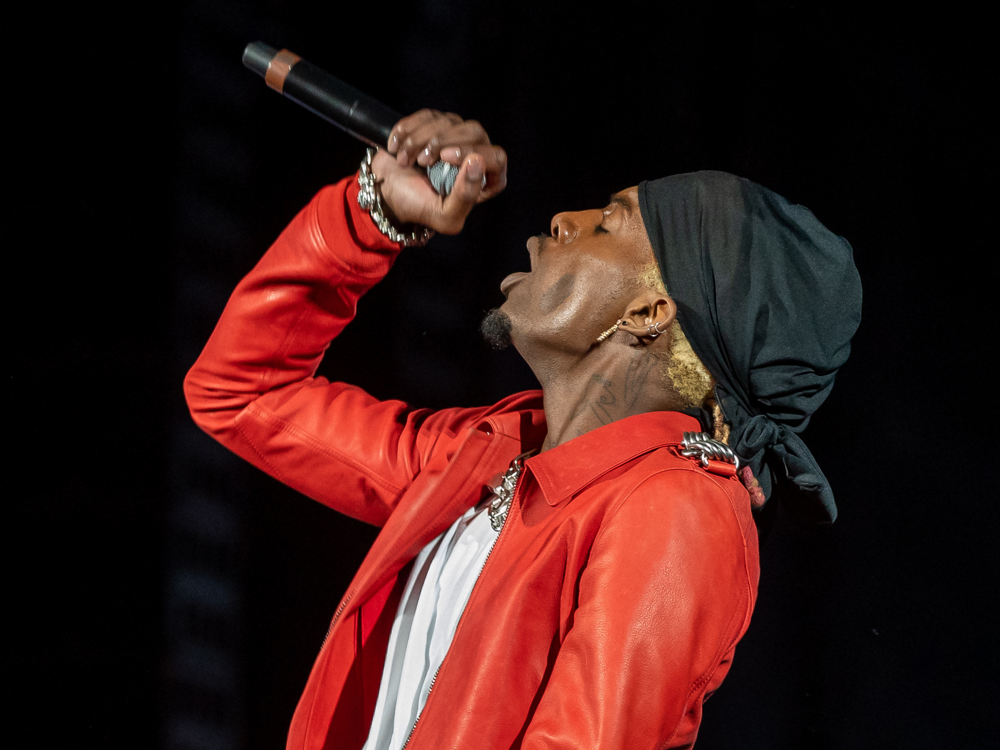

Playboi Carti, wiens echte naam Jordan Terrell Carter is, is een Amerikaanse rapper, zanger en mode-icoon die in de jaren 2010 snel naam maakte in de hiphopscene. Hij staat bekend om zijn onconventionele stijl, minimalistische producties en unieke flow, die vaak wordt gekarakteriseerd door ad-libs en een door de sfeer gedreven benadering van muziek. Carti’s doorbraak kwam met de release van zijn mixtape *Playboi Carti* in 2017, maar het was zijn debuutalbum *Die Lit* (2018) dat hem wereldwijd op de kaart zette, met hits zoals "Magnolia" en "Long Time." Zijn muzikale stijl mengt elementen van trap, cloud rap en punk, en zijn invloed is voelbaar in de opkomst van artiesten die zijn experimenten met geluid en esthetiek overnemen. Carti’s modekeuzes, vaak in samenwerking met high-end merken, hebben hem ook tot een icoon binnen de streetwear- en mode-industrie gemaakt. Ondanks zijn vaak cryptische en abstracte benadering van muziek blijft Carti een van de meest vernieuwende en invloedrijke figuren in de hedendaagse hiphop.
